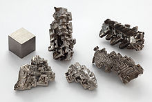

Bismuth
|  | |||||||||||||||||||||||||||||||||||||||||||||||||||||||||||||||||||||||||||||||||||||||||||||||||||||||||||||||||||||||||||||||||||||||||||||||||||||||||||||||||||||||||||||||||||||||||||||||||||||||||||||||||||||||||||||||||||||
| General properties | |||||||||||||||||||||||||||||||||||||||||||||||||||||||||||||||||||||||||||||||||||||||||||||||||||||||||||||||||||||||||||||||||||||||||||||||||||||||||||||||||||||||||||||||||||||||||||||||||||||||||||||||||||||||||||||||||||||
|---|---|---|---|---|---|---|---|---|---|---|---|---|---|---|---|---|---|---|---|---|---|---|---|---|---|---|---|---|---|---|---|---|---|---|---|---|---|---|---|---|---|---|---|---|---|---|---|---|---|---|---|---|---|---|---|---|---|---|---|---|---|---|---|---|---|---|---|---|---|---|---|---|---|---|---|---|---|---|---|---|---|---|---|---|---|---|---|---|---|---|---|---|---|---|---|---|---|---|---|---|---|---|---|---|---|---|---|---|---|---|---|---|---|---|---|---|---|---|---|---|---|---|---|---|---|---|---|---|---|---|---|---|---|---|---|---|---|---|---|---|---|---|---|---|---|---|---|---|---|---|---|---|---|---|---|---|---|---|---|---|---|---|---|---|---|---|---|---|---|---|---|---|---|---|---|---|---|---|---|---|---|---|---|---|---|---|---|---|---|---|---|---|---|---|---|---|---|---|---|---|---|---|---|---|---|---|---|---|---|---|---|---|---|---|---|---|---|---|---|---|---|---|---|---|---|---|---|---|---|
| Name, symbol | bismuth, Bi | ||||||||||||||||||||||||||||||||||||||||||||||||||||||||||||||||||||||||||||||||||||||||||||||||||||||||||||||||||||||||||||||||||||||||||||||||||||||||||||||||||||||||||||||||||||||||||||||||||||||||||||||||||||||||||||||||||||
| Pronunciation | /ˈbɪzməθ/ BIZ-məth |
||||||||||||||||||||||||||||||||||||||||||||||||||||||||||||||||||||||||||||||||||||||||||||||||||||||||||||||||||||||||||||||||||||||||||||||||||||||||||||||||||||||||||||||||||||||||||||||||||||||||||||||||||||||||||||||||||||
| Appearance | lustrous silver | ||||||||||||||||||||||||||||||||||||||||||||||||||||||||||||||||||||||||||||||||||||||||||||||||||||||||||||||||||||||||||||||||||||||||||||||||||||||||||||||||||||||||||||||||||||||||||||||||||||||||||||||||||||||||||||||||||||
| Bismuth in the periodic table | |||||||||||||||||||||||||||||||||||||||||||||||||||||||||||||||||||||||||||||||||||||||||||||||||||||||||||||||||||||||||||||||||||||||||||||||||||||||||||||||||||||||||||||||||||||||||||||||||||||||||||||||||||||||||||||||||||||
|
|||||||||||||||||||||||||||||||||||||||||||||||||||||||||||||||||||||||||||||||||||||||||||||||||||||||||||||||||||||||||||||||||||||||||||||||||||||||||||||||||||||||||||||||||||||||||||||||||||||||||||||||||||||||||||||||||||||
| Atomic number | 83 | ||||||||||||||||||||||||||||||||||||||||||||||||||||||||||||||||||||||||||||||||||||||||||||||||||||||||||||||||||||||||||||||||||||||||||||||||||||||||||||||||||||||||||||||||||||||||||||||||||||||||||||||||||||||||||||||||||||
| Standard atomic weight (±) | 208.98040(1)[1] | ||||||||||||||||||||||||||||||||||||||||||||||||||||||||||||||||||||||||||||||||||||||||||||||||||||||||||||||||||||||||||||||||||||||||||||||||||||||||||||||||||||||||||||||||||||||||||||||||||||||||||||||||||||||||||||||||||||
| Element category | post-transition metal | ||||||||||||||||||||||||||||||||||||||||||||||||||||||||||||||||||||||||||||||||||||||||||||||||||||||||||||||||||||||||||||||||||||||||||||||||||||||||||||||||||||||||||||||||||||||||||||||||||||||||||||||||||||||||||||||||||||
| Group, block | group 15 (pnictogens), p-block | ||||||||||||||||||||||||||||||||||||||||||||||||||||||||||||||||||||||||||||||||||||||||||||||||||||||||||||||||||||||||||||||||||||||||||||||||||||||||||||||||||||||||||||||||||||||||||||||||||||||||||||||||||||||||||||||||||||
| Period | period 6 | ||||||||||||||||||||||||||||||||||||||||||||||||||||||||||||||||||||||||||||||||||||||||||||||||||||||||||||||||||||||||||||||||||||||||||||||||||||||||||||||||||||||||||||||||||||||||||||||||||||||||||||||||||||||||||||||||||||
| Electron configuration | [Xe] 4f14 5d10 6s2 6p3 | ||||||||||||||||||||||||||||||||||||||||||||||||||||||||||||||||||||||||||||||||||||||||||||||||||||||||||||||||||||||||||||||||||||||||||||||||||||||||||||||||||||||||||||||||||||||||||||||||||||||||||||||||||||||||||||||||||||
| per shell | 2, 8, 18, 32, 18, 5 | ||||||||||||||||||||||||||||||||||||||||||||||||||||||||||||||||||||||||||||||||||||||||||||||||||||||||||||||||||||||||||||||||||||||||||||||||||||||||||||||||||||||||||||||||||||||||||||||||||||||||||||||||||||||||||||||||||||
| Physical properties | |||||||||||||||||||||||||||||||||||||||||||||||||||||||||||||||||||||||||||||||||||||||||||||||||||||||||||||||||||||||||||||||||||||||||||||||||||||||||||||||||||||||||||||||||||||||||||||||||||||||||||||||||||||||||||||||||||||
| Phase | solid | ||||||||||||||||||||||||||||||||||||||||||||||||||||||||||||||||||||||||||||||||||||||||||||||||||||||||||||||||||||||||||||||||||||||||||||||||||||||||||||||||||||||||||||||||||||||||||||||||||||||||||||||||||||||||||||||||||||
| Melting point | 544.7 K (271.5 °C, 520.7 °F) | ||||||||||||||||||||||||||||||||||||||||||||||||||||||||||||||||||||||||||||||||||||||||||||||||||||||||||||||||||||||||||||||||||||||||||||||||||||||||||||||||||||||||||||||||||||||||||||||||||||||||||||||||||||||||||||||||||||
| Boiling point | 1837 K (1564 °C, 2847 °F) | ||||||||||||||||||||||||||||||||||||||||||||||||||||||||||||||||||||||||||||||||||||||||||||||||||||||||||||||||||||||||||||||||||||||||||||||||||||||||||||||||||||||||||||||||||||||||||||||||||||||||||||||||||||||||||||||||||||
| Density near r.t. | 9.78 g·cm−3 | ||||||||||||||||||||||||||||||||||||||||||||||||||||||||||||||||||||||||||||||||||||||||||||||||||||||||||||||||||||||||||||||||||||||||||||||||||||||||||||||||||||||||||||||||||||||||||||||||||||||||||||||||||||||||||||||||||||
| when liquid, at m.p. | 10.05 g·cm−3 | ||||||||||||||||||||||||||||||||||||||||||||||||||||||||||||||||||||||||||||||||||||||||||||||||||||||||||||||||||||||||||||||||||||||||||||||||||||||||||||||||||||||||||||||||||||||||||||||||||||||||||||||||||||||||||||||||||||
| Heat of fusion | 11.30 kJ·mol−1 | ||||||||||||||||||||||||||||||||||||||||||||||||||||||||||||||||||||||||||||||||||||||||||||||||||||||||||||||||||||||||||||||||||||||||||||||||||||||||||||||||||||||||||||||||||||||||||||||||||||||||||||||||||||||||||||||||||||
| Heat of vaporization | 179 kJ·mol−1 | ||||||||||||||||||||||||||||||||||||||||||||||||||||||||||||||||||||||||||||||||||||||||||||||||||||||||||||||||||||||||||||||||||||||||||||||||||||||||||||||||||||||||||||||||||||||||||||||||||||||||||||||||||||||||||||||||||||
| Molar heat capacity | 25.52 J·mol−1·K−1 | ||||||||||||||||||||||||||||||||||||||||||||||||||||||||||||||||||||||||||||||||||||||||||||||||||||||||||||||||||||||||||||||||||||||||||||||||||||||||||||||||||||||||||||||||||||||||||||||||||||||||||||||||||||||||||||||||||||
vapor pressure
|
|||||||||||||||||||||||||||||||||||||||||||||||||||||||||||||||||||||||||||||||||||||||||||||||||||||||||||||||||||||||||||||||||||||||||||||||||||||||||||||||||||||||||||||||||||||||||||||||||||||||||||||||||||||||||||||||||||||
| Atomic properties | |||||||||||||||||||||||||||||||||||||||||||||||||||||||||||||||||||||||||||||||||||||||||||||||||||||||||||||||||||||||||||||||||||||||||||||||||||||||||||||||||||||||||||||||||||||||||||||||||||||||||||||||||||||||||||||||||||||
| Oxidation states | 5, 4, 3, 2, 1 (a mildly acidic oxide) | ||||||||||||||||||||||||||||||||||||||||||||||||||||||||||||||||||||||||||||||||||||||||||||||||||||||||||||||||||||||||||||||||||||||||||||||||||||||||||||||||||||||||||||||||||||||||||||||||||||||||||||||||||||||||||||||||||||
| Electronegativity | Pauling scale: 2.02 | ||||||||||||||||||||||||||||||||||||||||||||||||||||||||||||||||||||||||||||||||||||||||||||||||||||||||||||||||||||||||||||||||||||||||||||||||||||||||||||||||||||||||||||||||||||||||||||||||||||||||||||||||||||||||||||||||||||
| Ionization energies | 1st: 703 kJ·mol−1 2nd: 1610 kJ·mol−1 3rd: 2466 kJ·mol−1 (more) |
||||||||||||||||||||||||||||||||||||||||||||||||||||||||||||||||||||||||||||||||||||||||||||||||||||||||||||||||||||||||||||||||||||||||||||||||||||||||||||||||||||||||||||||||||||||||||||||||||||||||||||||||||||||||||||||||||||
| Atomic radius | empirical: 156 pm | ||||||||||||||||||||||||||||||||||||||||||||||||||||||||||||||||||||||||||||||||||||||||||||||||||||||||||||||||||||||||||||||||||||||||||||||||||||||||||||||||||||||||||||||||||||||||||||||||||||||||||||||||||||||||||||||||||||
| Covalent radius | 148±4 pm | ||||||||||||||||||||||||||||||||||||||||||||||||||||||||||||||||||||||||||||||||||||||||||||||||||||||||||||||||||||||||||||||||||||||||||||||||||||||||||||||||||||||||||||||||||||||||||||||||||||||||||||||||||||||||||||||||||||
| Van der Waals radius | 207 pm | ||||||||||||||||||||||||||||||||||||||||||||||||||||||||||||||||||||||||||||||||||||||||||||||||||||||||||||||||||||||||||||||||||||||||||||||||||||||||||||||||||||||||||||||||||||||||||||||||||||||||||||||||||||||||||||||||||||
| Miscellanea | |||||||||||||||||||||||||||||||||||||||||||||||||||||||||||||||||||||||||||||||||||||||||||||||||||||||||||||||||||||||||||||||||||||||||||||||||||||||||||||||||||||||||||||||||||||||||||||||||||||||||||||||||||||||||||||||||||||
| Crystal structure | rhombohedral[2] | ||||||||||||||||||||||||||||||||||||||||||||||||||||||||||||||||||||||||||||||||||||||||||||||||||||||||||||||||||||||||||||||||||||||||||||||||||||||||||||||||||||||||||||||||||||||||||||||||||||||||||||||||||||||||||||||||||||
| Speed of sound thin rod | 1790 m·s−1 (at 20 °C) | ||||||||||||||||||||||||||||||||||||||||||||||||||||||||||||||||||||||||||||||||||||||||||||||||||||||||||||||||||||||||||||||||||||||||||||||||||||||||||||||||||||||||||||||||||||||||||||||||||||||||||||||||||||||||||||||||||||
| Thermal expansion | 13.4 µm·m−1·K−1 (at 25 °C) | ||||||||||||||||||||||||||||||||||||||||||||||||||||||||||||||||||||||||||||||||||||||||||||||||||||||||||||||||||||||||||||||||||||||||||||||||||||||||||||||||||||||||||||||||||||||||||||||||||||||||||||||||||||||||||||||||||||
| Thermal conductivity | 7.97 W·m−1·K−1 | ||||||||||||||||||||||||||||||||||||||||||||||||||||||||||||||||||||||||||||||||||||||||||||||||||||||||||||||||||||||||||||||||||||||||||||||||||||||||||||||||||||||||||||||||||||||||||||||||||||||||||||||||||||||||||||||||||||
| Electrical resistivity | 1.29 µΩ·m (at 20 °C) | ||||||||||||||||||||||||||||||||||||||||||||||||||||||||||||||||||||||||||||||||||||||||||||||||||||||||||||||||||||||||||||||||||||||||||||||||||||||||||||||||||||||||||||||||||||||||||||||||||||||||||||||||||||||||||||||||||||
| Magnetic ordering | diamagnetic | ||||||||||||||||||||||||||||||||||||||||||||||||||||||||||||||||||||||||||||||||||||||||||||||||||||||||||||||||||||||||||||||||||||||||||||||||||||||||||||||||||||||||||||||||||||||||||||||||||||||||||||||||||||||||||||||||||||
| Young's modulus | 32 GPa | ||||||||||||||||||||||||||||||||||||||||||||||||||||||||||||||||||||||||||||||||||||||||||||||||||||||||||||||||||||||||||||||||||||||||||||||||||||||||||||||||||||||||||||||||||||||||||||||||||||||||||||||||||||||||||||||||||||
| Shear modulus | 12 GPa | ||||||||||||||||||||||||||||||||||||||||||||||||||||||||||||||||||||||||||||||||||||||||||||||||||||||||||||||||||||||||||||||||||||||||||||||||||||||||||||||||||||||||||||||||||||||||||||||||||||||||||||||||||||||||||||||||||||
| Bulk modulus | 31 GPa | ||||||||||||||||||||||||||||||||||||||||||||||||||||||||||||||||||||||||||||||||||||||||||||||||||||||||||||||||||||||||||||||||||||||||||||||||||||||||||||||||||||||||||||||||||||||||||||||||||||||||||||||||||||||||||||||||||||
| Poisson ratio | 0.33 | ||||||||||||||||||||||||||||||||||||||||||||||||||||||||||||||||||||||||||||||||||||||||||||||||||||||||||||||||||||||||||||||||||||||||||||||||||||||||||||||||||||||||||||||||||||||||||||||||||||||||||||||||||||||||||||||||||||
| Mohs hardness | 2.25 | ||||||||||||||||||||||||||||||||||||||||||||||||||||||||||||||||||||||||||||||||||||||||||||||||||||||||||||||||||||||||||||||||||||||||||||||||||||||||||||||||||||||||||||||||||||||||||||||||||||||||||||||||||||||||||||||||||||
| Brinell hardness | 70–95 MPa | ||||||||||||||||||||||||||||||||||||||||||||||||||||||||||||||||||||||||||||||||||||||||||||||||||||||||||||||||||||||||||||||||||||||||||||||||||||||||||||||||||||||||||||||||||||||||||||||||||||||||||||||||||||||||||||||||||||
| CAS Registry Number | 7440-69-9 | ||||||||||||||||||||||||||||||||||||||||||||||||||||||||||||||||||||||||||||||||||||||||||||||||||||||||||||||||||||||||||||||||||||||||||||||||||||||||||||||||||||||||||||||||||||||||||||||||||||||||||||||||||||||||||||||||||||
| History | |||||||||||||||||||||||||||||||||||||||||||||||||||||||||||||||||||||||||||||||||||||||||||||||||||||||||||||||||||||||||||||||||||||||||||||||||||||||||||||||||||||||||||||||||||||||||||||||||||||||||||||||||||||||||||||||||||||
| Discovery | Claude François Geoffroy (1753) | ||||||||||||||||||||||||||||||||||||||||||||||||||||||||||||||||||||||||||||||||||||||||||||||||||||||||||||||||||||||||||||||||||||||||||||||||||||||||||||||||||||||||||||||||||||||||||||||||||||||||||||||||||||||||||||||||||||
| Most stable isotopes | |||||||||||||||||||||||||||||||||||||||||||||||||||||||||||||||||||||||||||||||||||||||||||||||||||||||||||||||||||||||||||||||||||||||||||||||||||||||||||||||||||||||||||||||||||||||||||||||||||||||||||||||||||||||||||||||||||||
|
|||||||||||||||||||||||||||||||||||||||||||||||||||||||||||||||||||||||||||||||||||||||||||||||||||||||||||||||||||||||||||||||||||||||||||||||||||||||||||||||||||||||||||||||||||||||||||||||||||||||||||||||||||||||||||||||||||||
{kind=link}
{kind=link}
Bismuth is a chemical element with symbol Bi and atomic number 83. Bismuth, a pentavalent post-transition metal, chemically resembles arsenic and antimony. Elemental bismuth may occur naturally, although its sulfide and oxide form important commercial ores. The free element is 86% as dense as lead. It is a brittle metal with a silvery white color when freshly produced, but is often seen in air with a pink tinge owing to surface oxidation. Bismuth is the most naturally diamagnetic element, and has one of the lowest values of thermal conductivity among metals.
Bismuth metal has been known from ancient times, although until the 18th century it was often confused with lead and tin, which share some physical properties. The etymology is uncertain, but possibly comes from Arabic bi ismid, meaning having the properties of antimony[3] or German words weisse masse or wismuth ("white mass"), translated in the mid-sixteenth century to New Latin bisemutum.[4]
Bismuth has long been considered as the element with the highest atomic mass that is stable. However, in 2003 it was discovered to be slightly radioactive: its only primordial isotope, bismuth-209, decays via alpha decay with a half life more than a billion times the estimated age of the universe.[5]
Bismuth compounds account for about half the production of bismuth. They are used in cosmetics, pigments, and a few pharmaceuticals, notably Pepto-Bismol, used to treat diarrhea. Bismuth's unusual propensity to expand upon freezing is responsible for some of its uses, such as in casting of printing type. Bismuth has unusually low toxicity for a heavy metal. As the toxicity of lead has become more apparent in recent years, there is an increasing use of bismuth alloys (presently about a third of bismuth production) as a replacement for lead.
Contents
[hide]History[edit]
{kind=link}
The name bismuth is from ca. 1660s, and is of uncertain etymology. It is one of the first 10 metals to have been discovered. Bismuth appears in the 1660s, from obsolete German Bismuth, Wismut, Wissmuth (early 16th century); perhaps related to Old High German hwiz ("white").[4] The New Latin bisemutum (due to Georgius Agricola, who Latinized many German mining and technical words) is from the German Wismuth, perhaps from weiße Masse, "white mass."[6] The element was confused in early times with tin and lead because of its resemblance to those elements. Bismuth has been known since ancient times, so no one person is credited with its discovery. Agricola, in De Natura Fossilium (ca. 1546) states that bismuth is a distinct metal in a family of metals including tin and lead. This was based on observation of the metals and their physical properties.[7] Miners in the age of alchemy also gave bismuth the name tectum argenti, or "silver being made," in the sense of silver still in the process of being formed within the Earth.[8][9][10]
Beginning with Johann Heinrich Pott in 1738,[11] Carl Wilhelm Scheele and Torbern Olof Bergman, the distinctness of lead and bismuth became clear, and Claude François Geoffroy demonstrated in 1753 that this metal is distinct from lead and tin.[9][12][13] Bismuth was also known to the Incas and used (along with the usual copper and tin) in a special bronze alloy for knives.[14]
Characteristics[edit]
{kind=link}
{kind=link}
Physical characteristics[edit]
Bismuth is a brittle metal with a white, silver-pink hue, often occurring in its native form, with an iridescent oxide tarnish showing many colors from yellow to blue. The spiral, stair-stepped structure of bismuth crystals is the result of a higher growth rate around the outside edges than on the inside edges. The variations in the thickness of the oxide layer that forms on the surface of the crystal causes different wavelengths of light to interfere upon reflection, thus displaying a rainbow of colors. When burned in oxygen, bismuth burns with a blue flame and its oxide forms yellow fumes.[12] Its toxicity is much lower than that of its neighbors in the periodic table, such as lead, antimony, and polonium.
No other metal is verified to be more naturally diamagnetic than bismuth.[12][15] (Superdiamagnetism is a different physical phenomenon.) Of any metal, it has one of the lowest values of thermal conductivity (after manganese, and maybe neptunium and plutonium) and the highest Hall coefficient.[16] It has a high electrical resistance.[12] When deposited in sufficiently thin layers on a substrate, bismuth is a semiconductor, rather than an other metal.[17]
Elemental bismuth is denser in the liquid phase than the solid, a characteristic it shares with antimony, germanium, silicon and gallium.[18] Bismuth expands 3.32% on solidification; therefore, it was long a component of low-melting typesetting alloys, where it compensated for the contraction of the other alloying components,[12][19][20][21] to form almost isostatic bismuth-lead eutectic alloys.
Though virtually unseen in nature, high-purity bismuth can form distinctive, colorful hopper crystals. It is relatively nontoxic and has a low melting point just above 271 °C, so crystals may be grown using a household stove, although the resulting crystals will tend to be lower quality than lab-grown crystals.[22]
At ambient conditions bismuth shares the same layered structure as the metallic forms of arsenic and antimony,[23] crystallizing in the rhombohedral lattice[24] (Pearson symbol hR6, space group R3m No. 166), which is often classed into trigonal or hexagonal crystal systems.[2] When compressed at room temperature, this Bi-I structure changes first to the monoclinic Bi-II at 2.55 GPa, then to the tetragonal Bi-III at 2.7 GPa, and finally to the body-centered cubic Bi-IV at 7.7 GPa. The corresponding transitions can be monitored via changes in electrical conductivity; they are rather reproducible and abrupt, and are therefore used for calibration of high-pressure equipment.[25][26]
Chemical characteristics[edit]
Bismuth is stable to both dry and moist air at ordinary temperatures. When red-hot, it reacts with water to make bismuth(III) oxide.[27]
- 2 Bi + 3 H2O → Bi2O3 + 3 H2
It reacts with fluorine to make bismuth(V) fluoride at 500 °C or bismuth(III) fluoride at lower temperatures (typically from Bi melts); with other halogens it yields only bismuth(III) halides.[28][29][30] The trihalides are corrosive and easily react with moisture, forming oxyhalides with the formula BiOX.[31]
- 2 Bi + 3 X2 → 2 BiX3 (X = F, Cl, Br, I)
Bismuth dissolves in concentrated sulfuric acid to make bismuth(III) sulfate and sulfur dioxide.[27]
- 6 H2SO4 + 2 Bi → 6 H2O + Bi2(SO4)3 + 3 SO2
It reacts with nitric acid to make bismuth(III) nitrate.
- Bi + 6 HNO3 → 3 H2O + 3 NO2 + Bi(NO3)3
It also dissolves in hydrochloric acid, but only with oxygen present.[27]
- 4 Bi + 3 O2 + 12 HCl → 4 BiCl3 + 6 H2O
It is used as a transmetalating agent in the synthesis of alkaline-earth metal complexes:
- 3 Ba + 2 BiPh3 → 3 BaPh2 + 2 Bi
Isotopes[edit]
The only primordial isotope of bismuth, bismuth-209, was traditionally regarded as the heaviest stable isotope, but it had long been suspected[32] to be unstable on theoretical grounds. This was finally demonstrated in 2003, when researchers at the Institut d'Astrophysique Spatiale in Orsay, France, measured the alpha emission half-life of 209Bi to be 1.9×1019 years,[33] over a billion times longer than the current estimated age of the universe. Owing to its extraordinarily long half-life, for all presently known medical and industrial applications, bismuth can be treated as if it is stable and nonradioactive. The radioactivity is of academic interest because bismuth is one of few elements whose radioactivity was suspected and theoretically predicted before being detected in the laboratory. Bismuth has the longest known alpha decay half-life, although tellurium-128 has a double beta decay half-life of over 2.2×1024 years.[34]
Several isotopes of bismuth with short half-lives occur within the radioactive disintegration chains of actinium, radium, and thorium, and more have been synthesized experimentally. Bismuth-213 is also found on the decay chain of uranium-233.[35]
Commercially, the radioactive isotope bismuth-213 can be produced by bombarding radium with bremsstrahlung photons from a linear particle accelerator. In 1997, an antibody conjugate with bismuth-213, which has a 45-minute half-life and decays with the emission of an alpha particle, was used to treat patients with leukemia. This isotope has also been tried in cancer treatment, for example, in the targeted alpha therapy (TAT) program.[36][37]
Chemical compounds[edit]
Bismuth forms trivalent and pentavalent compounds, the trivalent ones being more common. Many of its chemical properties are similar to those of arsenic and antimony, although they are less toxic than derivatives of those lighter elements.
Oxides and sulfides[edit]
At elevated temperatures, the vapors of the metal combine rapidly with oxygen, forming the yellow trioxide, Bi
2O
3.[18][38] When molten, at temperatures above 710 °C, this oxide corrodes any metal oxide, and even platinum.[30] On reaction with base, it forms two series of oxyanions: BiO−
2, which is polymeric and forms linear chains, and BiO3−
3. The anion in Li
3BiO
3 is actually a cubic octameric anion, Bi
8O24−
24, whereas the anion in Na
3BiO
3 is tetrameric.[39]
The dark red bismuth(V) oxide, Bi
2O
5, is unstable, liberating O
2 gas upon heating.[40] The compound NaBiO3 is a strong oxidising agent.[41]
Bismuth sulfide, Bi
2S
3, occurs naturally in bismuth ores.[42] It is also produced by the combination of molten bismuth and sulfur.[29]
{kind=link}
Bismuth oxychloride (BiOCl, see figure at right) and bismuth oxynitrate (BiONO3) stoichiometrically appear as simple anionic salts of the bismuthyl(III) cation (BiO+) which commonly occurs in aqueous bismuth compounds. However, in the case of BiOCl, the salt crystal forms in a structure of alternating plates of Bi, O, and Cl atoms, with each oxygen coordinating with four bismuth atoms in the adjacent plane. This mineral compound is used as a pigment and cosmetic (see below).[43]
Bismuthine and bismuthides[edit]
Unlike earlier members of group 15 elements such as nitrogen, phosphorus, and arsenic, and similar to the previous group 15 element antimony, bismuth does not form a stable hydride. Bismuth hydride, bismuthine (BiH
3), is an endothermic compound that spontaneously decomposes at room temperature. It is stable only below −60 °C.[39] Bismuthides are intermetallic compounds between bismuth and other metals.
In 2014 researchers discovered that sodium bismuthide can exist as a form of matter called a “three-dimensional topological Dirac semi-metal” (3DTDS) that possess 3D Dirac fermions in bulk. It is a natural, three-dimensional counterpart to graphene with similar electron mobility and velocity. Graphene and topological insulators (such as those in 3DTDS) are both crystalline materials that are electrically insulating inside but conducting on the surface, allowing them to function as transistors and other electronic devices. While sodium bismuthide (Na
3Bi) is too unstable to be used in devices without packaging, it can demonstrate potential applications of 3DTDS systems, which offer distinct efficiency and fabrication advantages over planar graphene in semiconductor and spintronics applications. [44][45]
Halides[edit]
The halides of bismuth in low oxidation states have been shown to adopt unusual structures. What was originally thought to be bismuth(I) chloride, BiCl, turns out to be a complex compound consisting of Bi5+
9 cations and BiCl2−
5 and Bi
2Cl2−
8 anions.[39][46] The Bi5+
9 cation has a distorted tricapped trigonal prismatic molecular geometry, and is also found in Bi
10Hf
3Cl
18, which is prepared by reducing a mixture of hafnium(IV) chloride and bismuth chloride with elemental bismuth, having the structure [Bi+
] [Bi5+
9] [HfCl2−
6]
3.[39]:50 Other polyatomic bismuth cations are also known, such as Bi2+
8, found in Bi
8(AlCl
4)
2.[46] Bismuth also forms a low-valence bromide with the same structure as "BiCl". There is a true monoiodide, BiI, which contains chains of Bi
4I
4 units. BiI decomposes upon heating to the triiodide, BiI
3, and elemental bismuth. A monobromide of the same structure also exists.[39] In oxidation state +3, bismuth forms trihalides with all of the halogens: BiF
3, BiCl
3, BiBr
3, and BiI
3. All of these except BiF
3 are hydrolyzed by water.[39]
Bismuth(III) chloride reacts with hydrogen chloride in ether solution to produce the acid HBiCl
4.[27]
The oxidation state +5 is less frequently encountered. One such compound is BiF
5, a powerful oxidizing and fluorinating agent. It is also a strong fluoride acceptor, reacting with xenon tetrafluoride to form the XeF+
3 cation:[27]
- BiF
5 + XeF
4 → XeF+
3BiF−
6
Aqueous species[edit]
In aqueous solution, in strong acid conditions the Bi3+
ion solvated to form the aqua ion Bi(H
2O)3+
8.[47] At pH > 0 polynuclear species exist, the most important of which is believed to be the octahedral complex [Bi
6O
4(OH)
4]6+
.[48]
Occurrence and production[edit]
{kind=link}
In the Earth's crust, bismuth is about twice as abundant as gold. The most important ores of bismuth are bismuthinite and bismite.[12] Native bismuth is known from Australia, Bolivia, and China.[49][50]
According to the United States Geological Survey, the world mining production of bismuth in 2010 was 8,900 tonnes, with the major contributions from China (6,500 tonnes), Peru (1,100 tonnes) and Mexico (850 tonnes). The refinery production was 16,000 tonnes, of which China produced 13,000, Mexico 850 and Belgium 800 tonnes.[51] The difference reflects bismuth's status as a byproduct of extraction of other metals such as lead, copper, tin, molybdenum and tungsten.[52]
Bismuth travels in crude lead bullion (which can contain up to 10% bismuth) through several stages of refining, until it is removed by the Kroll-Betterton process which separates the impurities as slag, or the electrolytic Betts process. Bismuth will behave similarly with another of its major metals, copper.[53] The raw bismuth metal from both processes contains still considerable amounts of other metals, foremost lead. By reacting the molten mixture with chlorine gas the metals are converted to their chlorides while bismuth remains unchanged. Impurities can also be removed by various other methods for example with fluxes and treatments yielding high-purity bismuth metal (over 99% Bi). World bismuth production from refineries is a more complete and reliable statistic.[53][54][55]
Price[edit]
{kind=link}
The price for pure bismuth metal has been relatively stable through most of the 20th century, except for a spike in the 1970s. Bismuth has always been produced mainly as a byproduct of lead refining, and thus the price, usually reflected the cost of recovery and the balance between production and demand.[56]
Demand for bismuth was small prior to World War II and was pharmaceutical – bismuth compounds were used to treat such conditions as digestive disorders, sexually transmitted diseases and burns. Minor amounts of bismuth metal were consumed in fusible alloys for fire sprinkler systems and fuse wire. During World War II bismuth was considered a strategic material, used for solders, fusible alloys, medications and atomic research. To stabilize the market, the producers set the price at $1.25 per pound (2.75 $/kg) during the war and at $2.25 per pound (4.96 $/kg) from 1950 until 1964.[56]
In the early 1970s, the price rose rapidly as a result of increasing demand for bismuth as a metallurgical additive to aluminium, iron and steel. This was followed by a decline owing to increased world production, stabilized consumption, and the recessions of 1980 and 1981–82. In 1984, the price began to climb as consumption increased worldwide, especially in the United States and Japan. In the early 1990s, research began on the evaluation of bismuth as a nontoxic replacement for lead in ceramic glazes, fishing sinkers, food-processing equipment, free-machining brasses for plumbing applications, lubricating greases, and shot for waterfowl hunting.[57] Growth in these areas remained slow during the middle 1990s, in spite of the backing of lead replacement by the US Government, but intensified around 2005. This resulted in a rapid and continuing increase in price.[56]
Recycling[edit]
Whereas bismuth is most available today as a byproduct, its sustainability is more dependent on recycling. Bismuth is mostly a byproduct of lead smelting, along with silver, zinc, antimony, and other metals, and also of tungsten production, along with molybdenum and tin, and also of copper production. Recycling bismuth is difficult in many of its end uses, primarily because of scattering.
Probably the easiest to recycle would be bismuth-containing fusible alloys in the form of larger objects, then larger soldered objects. Half of the world's solder consumption is in electronics (i.e., circuit boards).[58] As the soldered objects get smaller or contain little solder or little bismuth, the recovery gets progressively more difficult and less economic, although solder with a higher silver content will be more worthwhile recovering. Next in recycling feasibility would be sizeable catalysts with a fair bismuth content, perhaps as bismuth phosphomolybdate, and then bismuth used in galvanizing and as a free-machining metallurgical additive.
Bismuth in uses where it is dispersed most widely include stomach medicines (bismuth subsalicylate), paints (bismuth vanadate) on a dry surface, pearlescent cosmetics (bismuth oxychloride), and bismuth-containing bullets that have been fired. The bismuth scattered in these uses is unrecoverable with present technology.
The most important sustainability fact about bismuth is its byproduct status, which can either improve sustainability (i.e., vanadium or manganese nodules) or, for bismuth from lead ore, constrain it; bismuth is constrained. The extent that the constraint on bismuth can be ameliorated or not is going to be tested by the future of the lead storage battery, since 90% of the world market for lead is in storage batteries for gasoline or diesel-powered motor vehicles.
The life-cycle assessment of bismuth will focus on solders, one of the major uses of bismuth, and the one with the most complete information. The average primary energy use for solders is around 200 MJ per kg, with the high-bismuth solder (58% Bi) only 20% of that value, and three low-bismuth solders (2% to 5% Bi) running very close to the average. The global warming potential averaged 10 to 14 kg carbon dioxide, with the high-bismuth solder about two-thirds of that and the low-bismuth solders about average. The acidification potential for the solders is around 0.9 to 1.1 kg sulfur dioxide equivalent, with the high-bismuth solder and one low-bismuth solder only one-tenth of the average and the other low-bismuth solders about average.[59] There is very little life-cycle information on other bismuth alloys or compounds.
Applications[edit]
Bismuth has few commercial applications, none of which is particularly large. Taking the US as an example, 884 tonnes of bismuth were consumed in 2010, of which 63% went into chemicals (including pharmaceuticals, pigments, and cosmetics), 26% into metallurgical additives for casting and galvanizing,[60] 7% into bismuth alloys, solders and ammunition, and 4% into research and other uses.[51]
Some manufacturers use bismuth as a substitute in equipment for potable water systems such as valves to meet "lead-free" mandates in the U.S. (starts in 2014). This is a fairly large application since it covers all residential and commercial building construction.
In the early 1990s, researchers began to evaluate bismuth as a nontoxic replacement for lead in various applications.
Medicines[edit]
Bismuth is an ingredient in some pharmaceuticals, although the use of some of these substances is declining.[43]
- Bismuth subsalicylate is used as an antidiarrheal; it is the active ingredient in such "Pink Bismuth" preparations as Pepto-Bismol, as well as the 2004 reformulation of Kaopectate. It is also used to treat some other gastro-intestinal diseases. The mechanism of action of this substance is still not well documented, although an oligodynamic effect (toxic effect of small doses of heavy metal ions on microbes) may be involved in at least some cases. Salicylic acid from hydrolysis of the compound is antimicrobial for toxogenic E. coli, an important pathogen in traveler's diarrhea.[61]
- a combination of bismuth subsalicylate and bismuth subcitrate is used to treat peptic ulcers.
- Bibrocathol is an organic bismuth-containing compound used to treat eye infections.
- Bismuth subgallate, the active ingredient in Devrom, is used as an internal deodorant to treat malodor from flatulence ("gas") and feces.
- Bismuth compounds (including sodium bismuth tartrate) were formerly used to treat syphilis[62][63]
- "Milk of bismuth" (an aqueous solution of bismuth hydroxide and bismuth subcarbonate) was marketed as an alimentary cureall in the early 20th century
- Bismuth subnitrate (Bi5O(OH)9(NO3)4) and bismuth subcarbonate (Bi2O2(CO3)) are also used in medicine.[12]
Cosmetics and pigments[edit]
Bismuth oxychloride (BiOCl) is sometimes used in cosmetics, as a pigment in paint for eye shadows, hair sprays and nail polishes.[43][64][65] This compound is found as the mineral bismoclite and in crystal form contains layers of atoms (see figure above) that refract light chromatically, resulting in an iridescent appearance similar to nacre of pearl. It was used as a cosmetic in ancient Egypt and in many places since. Bismuth white (also "Spanish white") can refer to either bismuth oxychloride or bismuth oxynitrate (BiONO3), when used as a white pigment.
Metal and alloys[edit]
Bismuth is used in metal alloys with other metals such as iron, to create alloys to go into automatic sprinkler systems for fires. Also used to make bismuth bronze which was used in the Bronze Age.
Lead replacement[edit]
The density difference between lead (density 11.32 g·cm−3) and bismuth (density 9.78 g·cm−3) is small enough that for many ballistics and weighting applications, bismuth can substitute for lead. For example, it can replace lead as a dense material in fishing sinkers. It has been used as a replacement for lead in shot, bullets and less-lethal riot gun ammunition. The Netherlands, Denmark, England, Wales, the US, and many other countries now prohibit the use of lead shot for the hunting of wetland birds, as many birds are prone to lead poisoning owing to mistaken ingestion of lead (instead of small stones and grit) to aid digestion, or even prohibit the use of lead for all hunting, such as in the Netherlands. Bismuth-tin alloy shot is one alternative that provides similar ballistic performance to lead. (Another less expensive but also more poorly performing alternative is "steel" shot, which is actually soft iron.) Bismuth's lack of malleability does, however, make it unsuitable for use in expanding hunting bullets.[citation needed]
Bismuth, as a dense element of high atomic weight, is used in bismuth-impregnated latex shields to shield from X-ray in medical examinations, such as CTs, mostly as it is considered non-toxic.[66]
The European Union's Restriction of Hazardous Substances Directive (RoHS) for reduction of lead has broadened bismuth's use in electronics as a component of low-melting point solders, as a replacement for traditional tin-lead solders.[51] Its low toxicity will be especially important for solders to be used in food processing equipment and copper water pipes, although it can also be used in other applications including those in the automobile industry, in the EU for example.[67]
Bismuth has been evaluated as a replacement for lead in free-machining brasses for plumbing applications,[68] although it does not equal the performance of leaded steels.[67]
Other metal uses and specialty alloys[edit]
Many bismuth alloys have low melting points and are found in specialty applications such as solders. Many automatic sprinklers, electric fuses, and safety devices in fire detection and suppression systems contain the eutectic In19.1-Cd5.3-Pb22.6-Sn8.3-Bi44.7 alloy that melts at 47 °C (117 °F)[12] This is a convenient temperature since it is unlikely to be exceeded in normal living conditions. Low-melting alloys, such as Bi-Cd-Pb-Sn alloy which melts at 70 °C, are also used in automotive and aviation industries. Before deforming a thin-walled metal part, it is filled with a melt or covered with a thin layer of the alloy to reduce the chance of breaking. Then the alloy is removed by submerging the part in boiling water.[69]
Bismuth is used to make free-machining steels and free-machining aluminium alloys for precision machining properties. It has similar effect to lead and improves the chip breaking during machining. The shrinking on solidification in lead and the expansion of bismuth compensate each other and therefore lead and bismuth are often used in similar quantities.[70][71] Similarly, alloys containing comparable parts of bismuth and exhibit a very small change (on the order 0.01%) upon melting, solidification or aging. Such alloys are used in high-precision casting, e.g. in dentistry, to create models and molds.[69] Bismuth is also used as an alloying agent in production of malleable irons and as a thermocouple material.[12][51]
Bismuth also is used in Aluminum-Silicon cast alloy in order to refining Si morphology. However, it indicated a poisoning effect on modification of strontium (Sr).[72][73] Some bismuth alloys, such as Bi35-Pb37-Sn25, are combined with non-sticking materials such as mica, glass and enamels because they easily wet them allowing to make joints to other parts. Addition of bismuth to caesium enhances the quantum yield of Cs cathodes.[43] Sintering of bismuth and manganese powders at 300 °C produces a permanent magnet and magnetostrictive material, which is used in ultrasonic generators and receivers working in the 10–100 kHz range and in magnetic memory devices.[74]
Other uses as compounds[edit]
{kind=link}
- Bismuth is included in BSCCO (bismuth strontium calcium copper oxide) which is a group of similar superconducting compounds discovered in 1988 that exhibit the highest superconducting transition temperatures.[75]
- Bismuth subnitrate is a component of glazes that produces an iridescence and is used as a pigment in paint.
- Bismuth telluride is a semiconductor and an excellent thermoelectric material.[43][76] Bi2Te3 diodes are used in mobile refrigerators, CPU coolers, and as detectors in infrared spectrophotometers.[43]
- Bismuth oxide, in its delta form, is a solid electrolyte for oxygen. This form normally breaks down below a high-temperature threshold, but can be electrodeposited well below this temperature in a highly alkaline solution.
- Bismuth vanadate is an opaque yellow pigment in artists' oil and acrylic paint. This compound is a non-toxic lightfast substitute for lemon yellow pigments such as the cadmium sulfides and the lead/strontium/barium chromates. Unlike lead chromate+lead sulfate lemon, bismuth vanadate does not readily blacken with UV exposure.[77][78]
- A catalyst for making acrylic fibers.[12]
- As an electrocatalyst in the conversion of CO2 to CO.[79]
- Ingredient in lubricating greases.[80]
- In crackling microstars (dragon's eggs) in pyrotechnics, as the oxide, subcarbonate or subnitrate.[81][82]
Toxicology and ecotoxicology[edit]
Scientific literature concurs that bismuth and most of its compounds are less toxic compared to other heavy metals (lead, antimony, etc.) and that it is not bioaccumulative. They have low solubilities in the blood, are easily removed with urine, and showed no carcinogenic, mutagenic or teratogenic effects in long-term tests on animals (up to 2 years).[83] Its biological half-life for whole-body retention is 5 days but it can remain in the kidney for years in patients treated with bismuth compounds.[84]
Bismuth poisoning exists and mostly affects the kidney, liver, and bladder. Skin and respiratory irritation can also follow exposure to respective organs. As with lead, overexposure to bismuth can result in the formation of a black deposit on the gingiva, known as a bismuth line.[85][86][87]
Bismuth's environmental impacts are not very well known. It is considered that its environmental impact is small, due in part to the low solubility of its compounds.[88] Limited information however means that a close eye should be kept on its impact.[84][89][90]
Bioremediation[edit]
The fungus Marasmius oreades can bio convert Bismuth in polluted soils.[91]
See also[edit]
References[edit]
- Jump up ^ Standard Atomic Weights 2013. Commission on Isotopic Abundances and Atomic Weights
- ^ Jump up to: a b Cucka, P.; Barrett, C. S. (1962). "The crystal structure of Bi and of solid solutions of Pb, Sn, Sb and Te in Bi". Acta Crystallographica 15 (9): 865. doi:10.1107/S0365110X62002297.
- Jump up ^ Bismuth. WebMineral. Retrieved on 17 December 2011.
- ^ Jump up to: a b Harper, Douglas. "bismuth". Online Etymology Dictionary.
- Jump up ^ Dumé, Belle (23 April 2003). "Bismuth breaks half-life record for alpha decay". Physicsworld.
- Jump up ^ Norman, Nicholas C. (1998). Chemistry of arsenic, antimony, and bismuth. p. 41. ISBN 978-0-7514-0389-3.
- Jump up ^ Agricola, Georgious (1955) [1546]. De Natura Fossilium. New York: Mineralogical Society of America. p. 178.
- Jump up ^ Nicholson, William (1819). "Bismuth". American edition of the British encyclopedia: Or, Dictionary of Arts and sciences ; comprising an accurate and popular view of the present improved state of human knowledge. p. 181.
- ^ Jump up to: a b Weeks, Mary Elvira (1932). "The discovery of the elements. II. Elements known to the alchemists". Journal of Chemical Education 9: 11. Bibcode:1932JChEd...9...11W. doi:10.1021/ed009p11.
- Jump up ^ Giunta, Carmen J. Glossary of Archaic Chemical Terms, Le Moyne College. See also for other terms for bismuth, including stannum glaciale (glacial tin or ice-tin).
- Jump up ^ Pott, Johann Heinrich (1738). "De Wismutho". Exercitationes chymicae. Berolini: Apud Johannem Andream Rüdigerum. p. 134.
- ^ Jump up to: a b c d e f g h i j Hammond, C. R. (2004). The Elements, in Handbook of Chemistry and Physics (81st ed.). Boca Raton (FL, US): CRC press. p. 4-1. ISBN 0-8493-0485-7.
- Jump up ^ Geoffroy (1753). "Sur Bismuth". Histoire de l'Académie royale des sciences ... avec les mémoires de mathématique & de physique ... tirez des registres de cette Académie: 190.
- Jump up ^ Gordon, Robert B.; Rutledge, John W. (1984). "Bismuth Bronze from Machu Picchu, Peru". Science 223 (4636): 585–586. Bibcode:1984Sci...223..585G. doi:10.1126/science.223.4636.585. JSTOR 1692247. PMID 17749940.
- Jump up ^ Krüger, p. 171.
- Jump up ^ Jones, H. (1936). "The Theory of the Galvomagnetic Effects in Bismuth". Proceedings of the Royal Society A: Mathematical, Physical and Engineering Sciences 155 (886): 653. Bibcode:1936RSPSA.155..653J. doi:10.1098/rspa.1936.0126. JSTOR 96773.
- Jump up ^ Hoffman, C.; Meyer, J.; Bartoli, F.; Di Venere, A.; Yi, X.; Hou, C.; Wang, H.; Ketterson, J.; Wong, G. (1993). "Semimetal-to-semiconductor transition in bismuth thin films". Phys. Rev. B 48 (15): 11431. Bibcode:1993PhRvB..4811431H. doi:10.1103/PhysRevB.48.11431.
- ^ Jump up to: a b Wiberg, p. 768.
- Jump up ^ Tracy, George R; Tropp, Harry E; Friedl, Alfred E. (1974). Modern physical science. p. 268. ISBN 978-0-03-007381-6.
- Jump up ^ Tribe, Alfred (1868). "IX.—Freezing of water and bismuth". Journal of the Chemical Society 21: 71. doi:10.1039/JS8682100071.
- Jump up ^ Papon, Pierre; Leblond, Jacques; Meijer, Paul Herman Ernst (2006). The Physics of Phase Transitions. p. 82. ISBN 978-3-540-33390-6.
- Jump up ^ Tiller, William A. (1991). The science of crystallization: microscopic interfacial phenomena. Cambridge University Press. p. 2. ISBN 0-521-38827-9.
- Jump up ^ Wiberg, p. 767.
- Jump up ^ Krüger, p. 172.
- Jump up ^ Boldyreva, Elena (2010). High-Pressure Crystallography: From Fundamental Phenomena to Technological Applications. Springer. pp. 264–265. ISBN 978-90-481-9257-1.
- Jump up ^ Manghnani, Murli H. (25–30 July 1999). Science and Technology of High Pressure: Proceedings of the International Conference on High Pressure Sciene and Technology (AIRAPT-17) 2. Honolulu, Hawaii: Universities Press (India) (published 2000). p. 1086. ISBN 978-81-7371-339-2.
- ^ Jump up to: a b c d e Suzuki, p. 8.
- Jump up ^ Wiberg, pp. 769–770.
- ^ Jump up to: a b Greenwood, pp. 559–561.
- ^ Jump up to: a b Krüger, p. 185
- Jump up ^ Suzuki, p. 9.
- Jump up ^ Carvalho, H. G.; Penna, M. (1972). "Alpha-activity of209Bi". Lettere al Nuovo Cimento 3 (18): 720. doi:10.1007/BF02824346.
- Jump up ^ Marcillac, Pierre de; Noël Coron; Gérard Dambier; Jacques Leblanc & Jean-Pierre Moalic (2003). "Experimental detection of α-particles from the radioactive decay of natural bismuth". Nature 422 (6934): 876–878. Bibcode:2003Natur.422..876D. doi:10.1038/nature01541. PMID 12712201.
- Jump up ^ Georges, Audi; Bersillon, O.; Blachot, J.; Wapstra, A.H. (2003). "The NUBASE Evaluation of Nuclear and Decay Properties". Nuclear Physics A (Atomic Mass Data Center) 729: 3–128. Bibcode:2003NuPhA.729....3A. doi:10.1016/j.nuclphysa.2003.11.001.
- Jump up ^ Loveland, Walter D; Morrissey, David J; Seaborg, Glenn Theodore (2006). Modern Nuclear Chemistry. p. 78. ISBN 978-0-471-11532-8.
- Jump up ^ Imam, S (2001). "Advancements in cancer therapy with alpha-emitters: a review". International Journal of Radiation Oncology Biology Physics 51: 271. doi:10.1016/S0360-3016(01)01585-1.
- Jump up ^ Acton, Ashton (2011). Issues in Cancer Epidemiology and Research. p. 520. ISBN 978-1-4649-6352-0.
- Jump up ^ Greenwood, p. 553.
- ^ Jump up to: a b c d e f Godfrey, S. M.; McAuliffe, C. A.; Mackie, A. G.; Pritchard, R. G. (1998). Nicholas C. Norman, ed. Chemistry of arsenic, antimony, and bismuth. Springer. pp. 67–84. ISBN 0-7514-0389-X.
- Jump up ^ Scott, Thomas; Eagleson, Mary (1994). Concise encyclopedia chemistry. Walter de Gruyter. p. 136. ISBN 3-11-011451-8.
- Jump up ^ Greenwood, p. 578.
- Jump up ^ An Introduction to the Study of Chemistry. Forgotten Books. p. 363. ISBN 978-1-4400-5235-4.
- ^ Jump up to: a b c d e f Krüger, p. 184.
- Jump up ^ "3D counterpart to graphene discovered [UPDATE]". KurzweilAI. 20 January 2014. Retrieved 28 January 2014.
- Jump up ^ Liu, Z. K.; Zhou, B.; Zhang, Y.; Wang, Z. J.; Weng, H. M.; Prabhakaran, D.; Mo, S. K.; Shen, Z. X.; Fang, Z.; Dai, X.; Hussain, Z.; Chen, Y. L. (2014). "Discovery of a Three-Dimensional Topological Dirac Semimetal, Na3Bi" (PDF). Science 343: 864–7. arXiv:1310.0391. doi:10.1126/science.1245085. PMID 24436183.
- ^ Jump up to: a b Gillespie, R. J.; Passmore, J. (1975). Emeléus, H. J.; Sharp A. G., eds. Advances in Inorganic Chemistry and Radiochemistry. Academic Press. pp. 77–78. ISBN 0-12-023617-6.
- Jump up ^ Persson, Ingmar (2010). "Hydrated metal ions in aqueous solution: How regular are their structures?". Pure and Applied Chemistry 82 (10): 1901–1917. doi:10.1351/PAC-CON-09-10-22.
- Jump up ^ Näslund, Jan; Persson, Ingmar; Sandström, Magnus (2000). "Solvation of the Bismuth(III) Ion by Water, Dimethyl Sulfoxide, N,N'-Dimethylpropyleneurea, and N,N-Dimethylthioformamide. An EXAFS, Large-Angle X-ray Scattering, and Crystallographic Structural Study". Inorganic Chemistry 39 (18): 4012–4021. doi:10.1021/ic000022m.
- Jump up ^ Anthony, John W.; Bideaux, Richard A.; Bladh, Kenneth W.; Nichols, Monte C. (eds.). "Bismuth". Handbook of Mineralogy (PDF). I (Elements, Sulfides, Sulfosalts). Chantilly, VA, US: Mineralogical Society of America. ISBN 0-9622097-0-8. Retrieved 5 December 2011.
- Jump up ^ Krüger, pp. 172–173.
- ^ Jump up to: a b c d Carlin, James F., Jr. "2010 USGS Minerals Yearbook: Bismuth" (PDF). United States Geological Survey. Retrieved 9 September 2010.
- Jump up ^ Krüger, p. 173.
- ^ Jump up to: a b Ojebuoboh, Funsho K. (1992). "Bismuth—Production, properties, and applications". JOM 44 (4): 46–49. Bibcode:1992JOM....44d..46O. doi:10.1007/BF03222821.
- Jump up ^ Horsley, G.W. (1957). "The preparation of bismuth for use in a liquid-metal fuelled reactor". Journal of Nuclear Energy (1954) 6: 41. doi:10.1016/0891-3919(57)90180-8.
- Jump up ^ Shevtsov, Yu. V.; Beizel’, N. F. (2011). "Pb distribution in multistep bismuth refining products". Inorganic Materials 47 (2): 139. doi:10.1134/S0020168511020166.
- ^ Jump up to: a b c d Bismuth Statistics and Information. see "Metal Prices in the United States through 1998" for a price summary and "Historical Statistics for Mineral and Material Commodities in the United States" for production. USGS.
- Jump up ^ Suzuki, p. 14.
- Jump up ^ Taylor, Harold A. (2000). Bismuth. Financial Times Executive Commodity Reports. London: Financial Times Energy. p. 17. ISBN 1-84083-326-2.
- Jump up ^ Warburg, N. "IKP, Department of Life-Cycle Engineering" (PDF). University of Stuttgart. Retrieved 5 May 2009.
- Jump up ^ Pistofidis, N.; Vourlias, G.; Konidaris, S.; Pavlidou, El.; Stergiou, A.; Stergioudis, G. (2007). "The effect of bismuth on the structure of zinc hot-dip galvanized coatings". Materials Letters 61 (4–5): 994. doi:10.1016/j.matlet.2006.06.029.
- Jump up ^ Sox TE; Olson CA (1989). "Binding and killing of bacteria by bismuth subsalicylate". Antimicrob Agents Chemother 33 (12): 2075–82. doi:10.1128/AAC.33.12.2075. PMC 172824. PMID 2694949.
- Jump up ^ Parnell, R. J. G. (1924). "Bismuth in the Treatment of Syphilis". Journal of the Royal Society of Medicine 17 (War section): 19–26. PMC 2201253. PMID 19984212.
- Jump up ^ USA 1540117, Giemsa, Gustav, "Manufacture of bismuth tartrates"
- Jump up ^ Maile, Frank J.; Pfaff, Gerhard; Reynders, Peter (2005). "Effect pigments—past, present and future". Progress in Organic Coatings 54 (3): 150. doi:10.1016/j.porgcoat.2005.07.003.
- Jump up ^ Pfaff, Gerhard (2008). Special effect pigments: Technical basics and applications. Vincentz Network GmbH. p. 36. ISBN 978-3-86630-905-0.
- Jump up ^ Hopper KD; King SH; Lobell ME; TenHave TR; Weaver JS (1997). "The breast: inplane x-ray protection during diagnostic thoracic CT—shielding with bismuth radioprotective garments". Radiology 205 (3): 853–8. doi:10.1148/radiology.205.3.9393547. PMID 9393547.
- ^ Jump up to: a b Lohse, Joachim; Zangl, Stéphanie; Groß, Rita; Gensch, Carl-Otto; Deubzer, Otmar (September 2007). "Adaptation to Scientific and Technical Progress of Annex II Directive 2000/53/EC" (PDF). European Commission. Retrieved 11 September 2009.
- Jump up ^ La Fontaine, A.; Keast, V.J. (2006). "Compositional distributions in classical and lead-free brasses". Materials Characterization 57 (4–5): 424. doi:10.1016/j.matchar.2006.02.005.
- ^ Jump up to: a b Krüger, p. 183.
- Jump up ^ Llewellyn, D. T; Hudd, Roger C (1998). Steels: Metallurgy and applications. Butterworth-Heinemann. p. 239. ISBN 978-0-7506-3757-2.
- Jump up ^ Davis & Associates, J.R & Handbook Committee, ASM International (1993). Aluminum and Aluminum Alloys. p. 41. ISBN 978-0-87170-496-2.
- Jump up ^ Farahany, Saeed; A. Ourdjini; M.H. Idris; L.T. Thai (2011). "Poisoning effect of bismuth on modification behavior of strontium in LM25 alloy". Journal of Bulletin of Materials Science 34 (6): 1223–1231. doi:10.1007/s12034-011-0239-5.
- Jump up ^ Farahany, Saeed; A. Ourdjini; M. H. Idris; L.T. Thai (2011). "Effect of bismuth on the microstructure of unmodified and Sr-modified Al-7%Si-0.4Mg alloy". Journal of Transactions of Nonferrous Metals Society of China 21 (7): 1455–1464. doi:10.1016/S1003-6326(11)60881-9.
- Jump up ^ Suzuki, p. 15.
- Jump up ^ "BSCCO". National High Magnetic Field Laboratory. Retrieved 19 January 2010.
- Jump up ^ Tritt, Terry M (2000). Recent trends in thermoelectric materials research. Academic Press. p. 12. ISBN 978-0-12-752178-7.
- Jump up ^ Tücks, Andreas; Beck, Horst P. (2007). "The photochromic effect of bismuth vanadate pigments: Investigations on the photochromic mechanism". Dyes and Pigments 72 (2): 163. doi:10.1016/j.dyepig.2005.08.027.
- Jump up ^ Müller, Albrecht (2003). "Yellow pigments". Coloring of plastics: Fundamentals, colorants, preparations. Hanser Verlag. pp. 91–93. ISBN 978-1-56990-352-0.
- Jump up ^ DiMeglio, John L.; Rosenthal, Joel (2013). "Selective conversion of CO2 to CO with high efficiency using an bismuth-based electrocatalyst". Journal of the American Chemical Society 135 (24): 8798–8801. doi:10.1021/ja4033549. PMC 3725765. PMID 23735115.
- Jump up ^ Mortier, Roy M; Fox, Malcolm F; Orszulik, Stefan T (2010). Chemistry and Technology of Lubricants. Springer. p. 430. ISBN 978-1-4020-8661-8.
- Jump up ^ Croteau, Gerry; Dills, Russell; Beaudreau, Marc; Davis, Mac (2010). "Emission factors and exposures from ground-level pyrotechnics". Atmospheric Environment 44 (27): 3295. Bibcode:2010AtmEn..44.3295C. doi:10.1016/j.atmosenv.2010.05.048.
- Jump up ^ Ledgard, Jared (2006). The Preparatory Manual of Black Powder and Pyrotechnics. Lulu. pp. 207, 319, 370, 518, search. ISBN 978-1-4116-8574-1.
- Jump up ^ Suzuki, pp. 19–20.
- ^ Jump up to: a b Fowler, B.A. & Sexton M.J. (2007). "Bismuth". In Nordberg, Gunnar. Handbook on the toxicology of metals. Academic Press. pp. 433 ff. ISBN 978-0-12-369413-3.
- Jump up ^ "Bismuth line" in TheFreeDictionary's Medical dictionary. Farlex, Inc.
- Jump up ^ Levantine, Ashley; Almeyda, John (1973). "Drug induced changes in pigmentation". British Journal of Dermatology 89 (1): 105–12. doi:10.1111/j.1365-2133.1973.tb01932.x. PMID 4132858.
- Jump up ^ Krüger, pp. 187–188.
- Jump up ^ Data on Bismuth's health and environmental effects. Lenntech.com. Retrieved on 17 December 2011.
- Jump up ^ Sigel, Astrid (2010). Organometallics in Environment and Toxicology. London: Royal Society of Chemistry. p. 504. ISBN 978-1-84755-177-1.
- Jump up ^ Bradley B; Singleton M; Lin Wan Po A (1989). "Bismuth Toxicity—A Reassessment". Journal of Clinical Pharmacy and Therapeutics 14 (6): 423–41. doi:10.1111/j.1365-2710.1989.tb00268.x. PMID 2693474.
- Jump up ^ Carmen Cristina Elekes; Gabriela busuioc. "The Mycoremediation of Metals Polluted Soils Using Wild Growing Species of Mushrooms" (PDF). Engineering Education.
Bibliography[edit]
 This article incorporates text from a publication now in the public domain: Brown, R. D., Jr. "Annual Average Bismuth Price", USGS (1998)
This article incorporates text from a publication now in the public domain: Brown, R. D., Jr. "Annual Average Bismuth Price", USGS (1998)
- Greenwood, N. N. & Earnshaw, A. (1997). Chemistry of the Elements (2nd ed.). Oxford: Butterworth-Heinemann. ISBN 0-7506-3365-4.
- Krüger, Joachim; Winkler, Peter; Lüderitz, Eberhard; Lück, Manfred; Wolf, Hans Uwe (2003). "Bismuth, Bismuth Alloys, and Bismuth Compounds". Ullmann's Encyclopedia of Industrial Chemistry. Wiley-VCH, Weinheim. pp. 171–189. doi:10.1002/14356007.a04_171.
- Suzuki, Hitomi (2001). Organobismuth Chemistry. Elsevier. pp. 1–20. ISBN 978-0-444-20528-5.
- Wiberg, Egon; Holleman, A. F.; Wiberg, Nils (2001). Inorganic chemistry. Academic Press. ISBN 0-12-352651-5.
External links[edit]
| Wikimedia Commons has media related to Bismuth. |
| Look up bismuth in Wiktionary, the free dictionary. |
- Laboratory growth of large crystals of Bismuth by Jan Kihle Crystal Pulling Laboratories, Norway
- Bismuth at The Periodic Table of Videos (University of Nottingham)
- Bismuth breaks half-life record for alpha decay
- Bismuth Crystals – Instructions & Pictures
{kind=link}
| [hide] Periodic table (Large cells) | |||||||||||||||||||||||||||||||||
|---|---|---|---|---|---|---|---|---|---|---|---|---|---|---|---|---|---|---|---|---|---|---|---|---|---|---|---|---|---|---|---|---|---|
| 1 | 2 | 3 | 4 | 5 | 6 | 7 | 8 | 9 | 10 | 11 | 12 | 13 | 14 | 15 | 16 | 17 | 18 | ||||||||||||||||
| 1 | H | He | |||||||||||||||||||||||||||||||
| 2 | Li | Be | B | C | N | O | F | Ne | |||||||||||||||||||||||||
| 3 | Na | Mg | Al | Si | P | S | Cl | Ar | |||||||||||||||||||||||||
| 4 | K | Ca | Sc | Ti | V | Cr | Mn | Fe | Co | Ni | Cu | Zn | Ga | Ge | As | Se | Br | Kr | |||||||||||||||
| 5 | Rb | Sr | Y | Zr | Nb | Mo | Tc | Ru | Rh | Pd | Ag | Cd | In | Sn | Sb | Te | I | Xe | |||||||||||||||
| 6 | Cs | Ba | La | Ce | Pr | Nd | Pm | Sm | Eu | Gd | Tb | Dy | Ho | Er | Tm | Yb | Lu | Hf | Ta | W | Re | Os | Ir | Pt | Au | Hg | Tl | Pb | Bi | Po | At | Rn | |
| 7 | Fr | Ra | Ac | Th | Pa | U | Np | Pu | Am | Cm | Bk | Cf | Es | Fm | Md | No | Lr | Rf | Db | Sg | Bh | Hs | Mt | Ds | Rg | Cn | 113 | Fl | 115 | Lv | 117 | 118 | |
|
|
|||||||||||||||||||||||||||||||||
|
||